Projects
Modular Inverter Test Platform
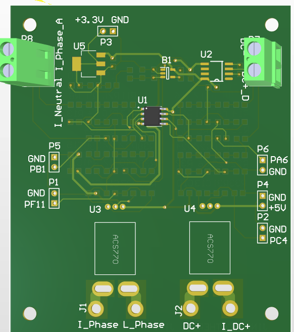
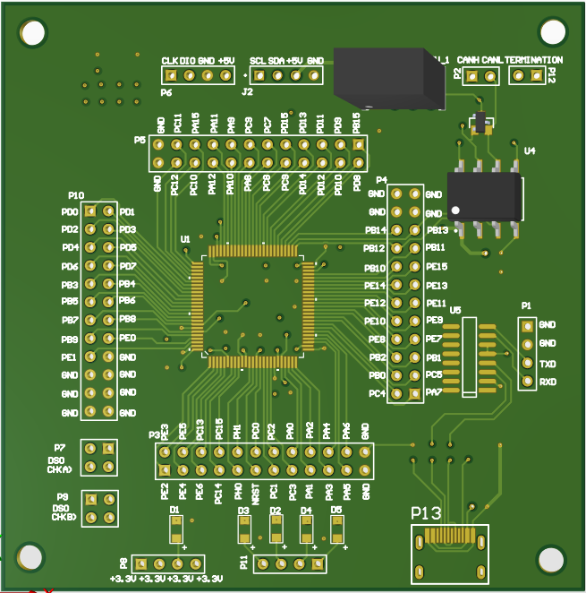

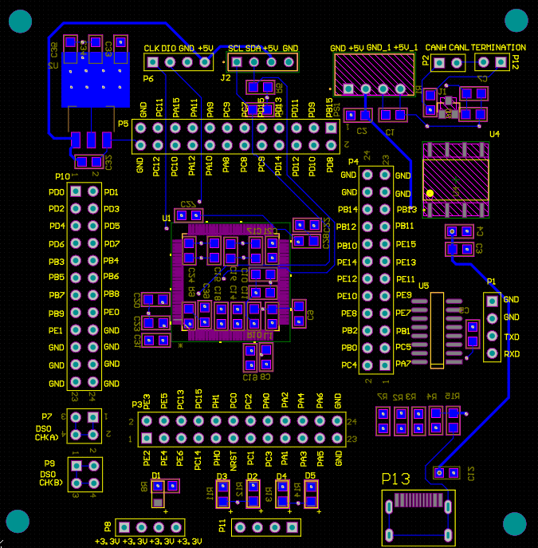
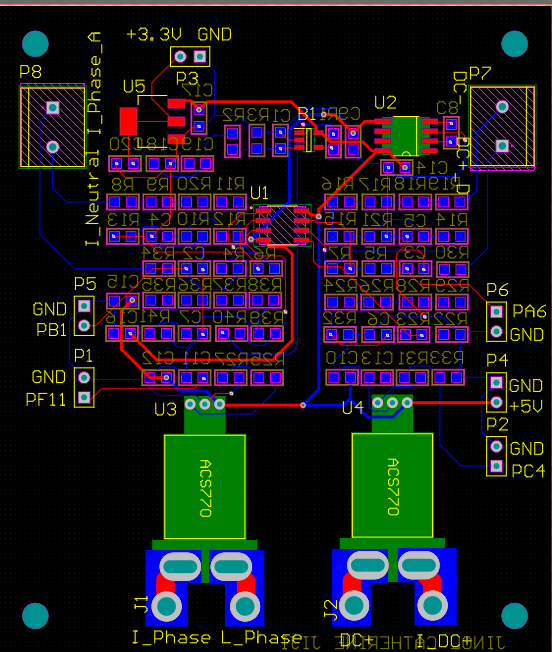
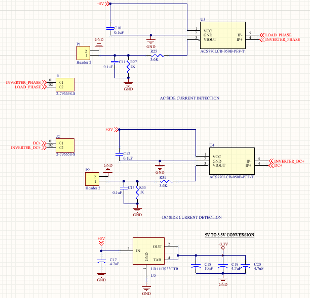
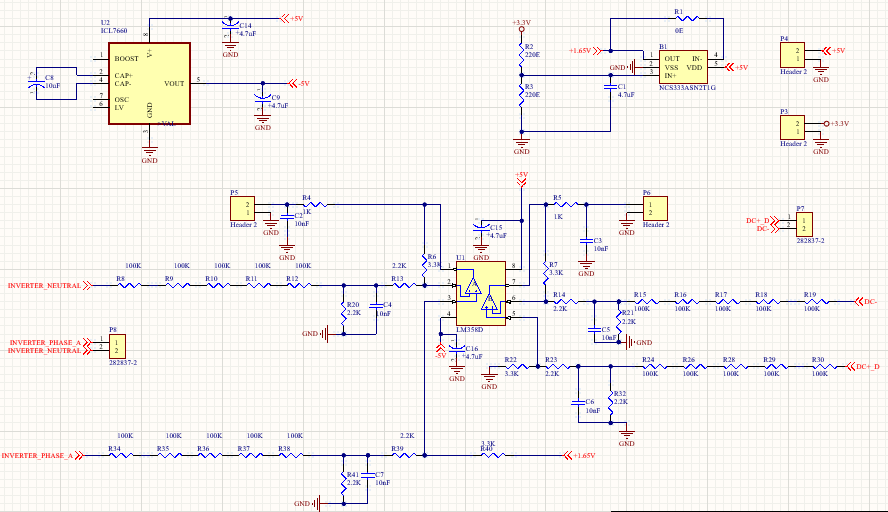

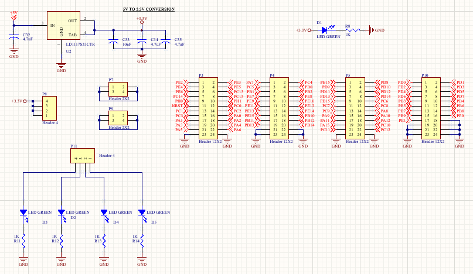
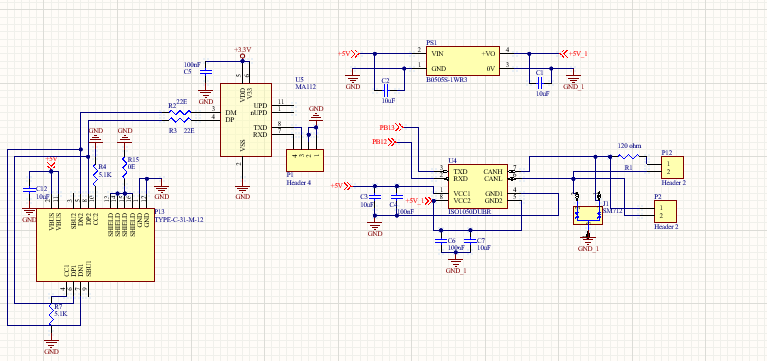
Design and Development of a Modular Inverter Test Platform for Real-Time Efficiency and Performance Analysis. Enables real-time AC/DC parameter measurement and reduces dependency on multiple instruments.Developed 2 hardware PCB boards using Altium designer specifically one 2 layer board for measuremnt and the later is a 4 layer STMH723VGT6 board.
STM32 Energy Monitoring System
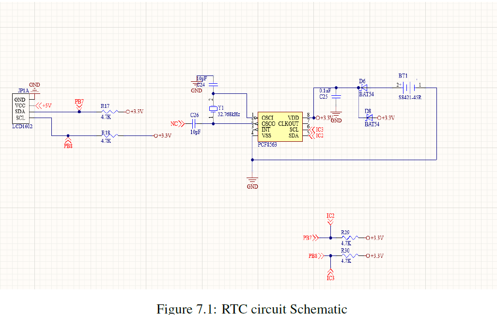
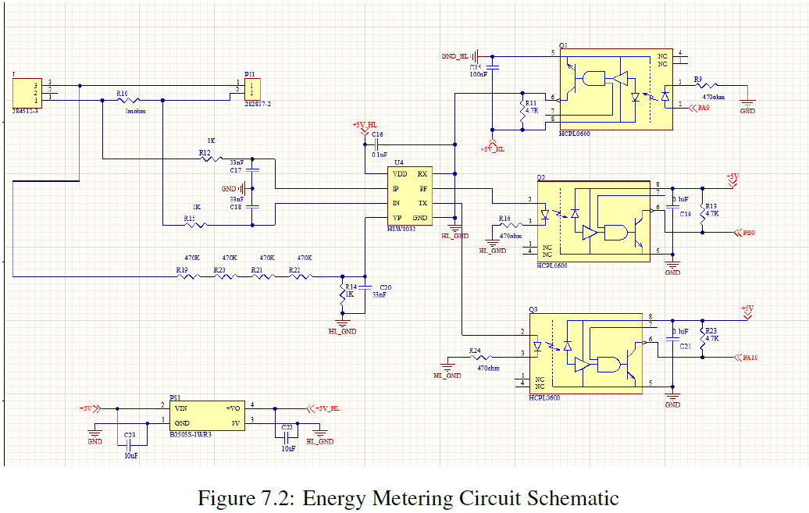
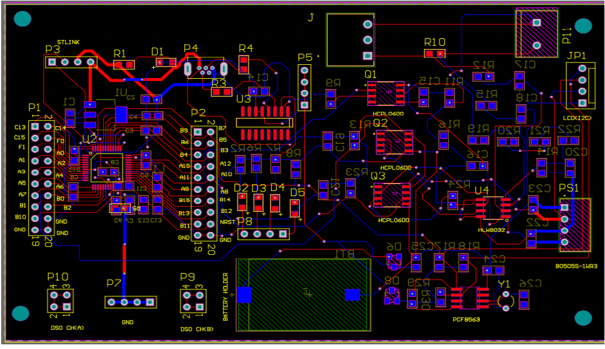
Developed a real-time energy monitoring system using STM32 and HLW8032. Displays voltage, current, and power with timestamp using external RTC on I2C LCD1060 on custom pcb board including measurement setup and STM32G431CBT6.
Smart Waste Segregation Unit
Designed a smart waste bin using ESP32 with AI-based waste segregation (metal, recyclable, disposable, organic) , level and smell detection. Integrated with Blynk for real-time alerts when thresholds are exceeded.